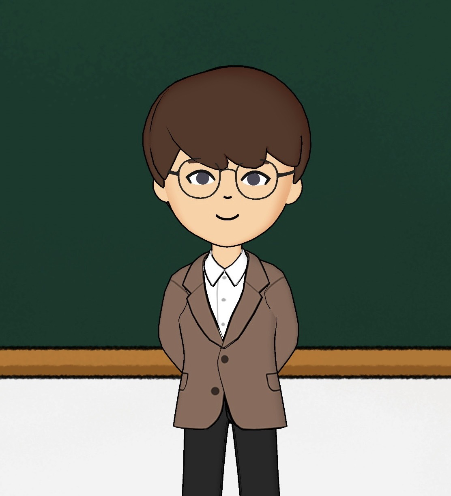

個人檔案
- 姓名：陳振泓
Name：CHEN - HUNG, CHEN
- 學歷：國立彰化師範大學數學系-碩士
Education：Master’s degree in Mathematics, National Changhua University of Education
論文：單一頂點平摺疊的數學理論建構
Thesis：Mathematical theoretical construction of single vertex flat folding
- Email：m0922007@mail.ncue.edu.tw
專長
- 數學教學、教材製作、試卷製作
Mathematics teaching, Teaching material design, Test paper design
- 數學文件排版程式：LaTeX, LaTeX Beamer, LaTeX Html
Mathematics document typesetting programs：LaTeX, LaTeX Beamer, LaTeX Html
- 電腦繪圖軟體：CorelDRAW
Computer drawing software：CorelDRAW
- 文書處理軟體：Excel, Word, PowerPoint
Document software：Excel, Word, PowerPoint
- 專業證照：人身保險業務員
Professional certificate：Life insurance salesman
經歷
- 初等微積分助教
Calculus teaching assistant
- 高中數學家教
Senior high school math tutor
- 補習班數學老師 (高中、國中)
Math teacher in cram school (Senior high school and Junior high school)
- 國立臺中教育大學 - 研究助理
Research assistant in National Taichung University of Education
教學講義
試卷